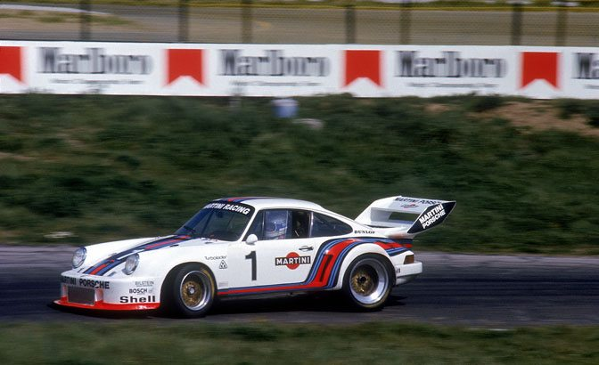

Porsche 935
tbh najlepsze porsche które wysrali z tamtej fabryki.
Opis
- Typ: samochód
- Pochodzenie: Niemcy
- Charakterystyka: najlepsze porsche
tbh najlepsze porsche które wysrali z tamtej fabryki.
| Porsche 935 | |
|---|---|
|  | |
| Typ | samochód |
| Pochodzenie | Niemcy |
| Kategoria | Samochody |
| Silnik | 2.8/3.3 L Flat-6 twin-turbo |
| Moc | 580-845 KM |
| Przyspieszenie 0-100 km/h | 3.2 sekundy (wariant z 76) |
| Prędkość maksymalna | ~320/340 km/h (wariant z 76) |
| Prędkość maksymala (2.0 baby) | ~270km/h |
| Produkcja | 1976-1981 |